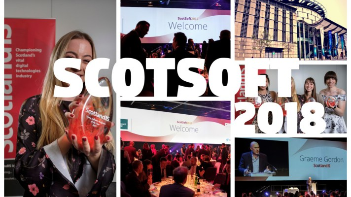

Graduation
Date Posted: 22nd June 2019
After five long years I have finally graduated with a first class masters! The graduation took place at Heriot-Watt on the 21st of June
and was a very enjoyable day all round! I am very happy with the work I have done over the last 5 years in university, and I am really looking
forward to the challenges that are yet to come.

ScotSoft 2018
Date Posted: 28th October 2018
Thanks to e-Placement, Time2Dine got invited to attend the ScotSoft conference at the EICC in Edinburgh. The conference was filled with very interesting talks and I learned a lot from each of them I attended. There was such
a variety of topics, so there was something for everyone. I attended talks ranging from technology in the health sector, to penetration testing, to the importance of Open Data and the rise of OpenStreetMaps. We were also
invited to attend the Awards Dinner, in which we'd be presented the e-Placement of the year award (which Time2Dine got awarded silver). The night was fantastic, and was topped off with a wonderful after dinner speech from the 2-time Gold Medallist Lizzy Yarnold.
Dissertation submitted
Date posted:23rd April 2018
I have finally finished my fourth year dissertation! More details available on the dissertation page, and my dissertation is available for download here if you would like to take a look.
Screenshots of KeepSafe
Date posted:5th April 2018
I have finished the third (and final) prototype for my personal safety application - KeepSafe. More details are here including screenshots.
Added online CV
Date posted:1st February 2018
I have added a page for my CV to make it easier to access.
Exam Results
Date posted: 31st January 2018
I have now received my exam results for semester 1 of year 4. I achieved an A for my first deliverable of my dissertation and two B's in Data Mining and Machine Learning (62%) and Professional and Industrial Studies (65%). More details on these courses here. However I am dissapointed in my grade for Data Visualisation (32%) as I prioritised other courses and dissertation over this which resulted in a much lower grade. Overall, I am happy with these results, as this was my first true challenge concerning time management within my time at university.

Week 3, Semester 2
Date posted: 24th January 2018
With the second semester of university already flying by, I have been creating some smaller android apps to get me back into the swing of things again. Once completed these will be available here or through the projects page on the toolbar.
Two of the courses I am sitting this semester are E-Commerce Technology and Big Data Management, both of which I am finding very interesting. Through Big Data Management I am learning to use mongoDB, and applying JSON hierarchies which I am finding enjoyable.

Back to uni update, and dissertation first deliverable result
Date posted: 12th January 2018
Back to uni after christmas break, and I am raring to get stuck into second semester. I already have a job opportunity coming up which will test me and I hope to learn a lot from. As for now, I am picking away at my dissertation, designing the UI and hope to sort that before next week. As for the first deliverable for my dissertation, I was awarded 75% for it, and I intend to maintain this at the end of second semester, and achieve a first for it.
Disseration deliverable 1 hand in
Date posted: 23th Novemeber 2017
After a tough few weeks, I have completed the first draft of my dissertation and submitted it. It is available here if you'd like to read it.
Picking a dissertation topic
Date posted: 25th September 2017
For my fourth year dissertation (more details here) I have decided to investigate Personal Safety mobile applications and develop my own. This project includes a lot, including conducting a survey to determine if people find them useful and if so, what kind of features they expect from one. I will then begin to design my own app, implement it, test it, and evaluate if it is fit for purpose and if it improves personal safety of its users. I am incredibly excited to be taking part in this project and hope to learn a lot from it.
Creating a blog
Date posted: 10th September 2017
After months of procrastination, I've finally got around to creating this website, a development blog for all the projects I am currently a part of. For a list of projects click here